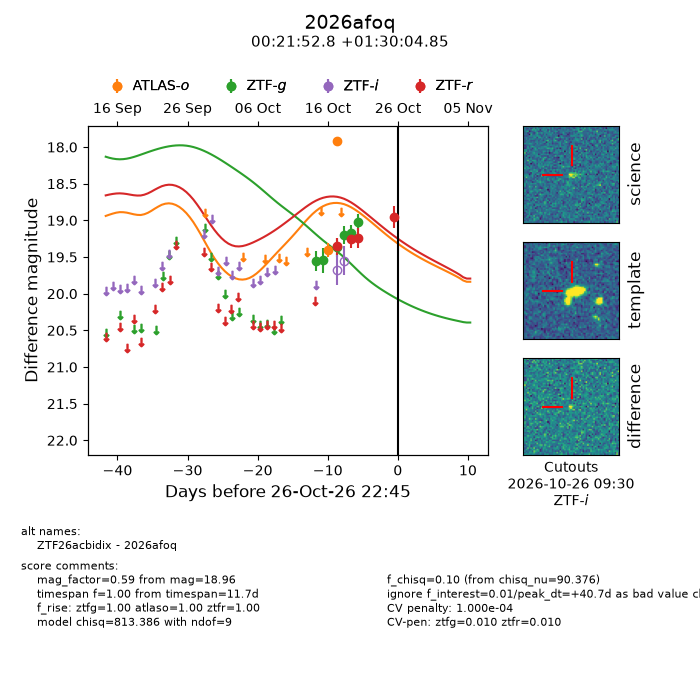
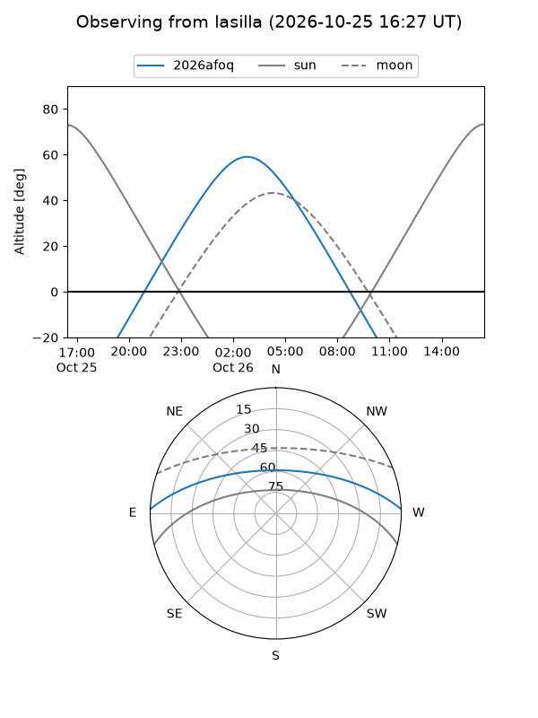
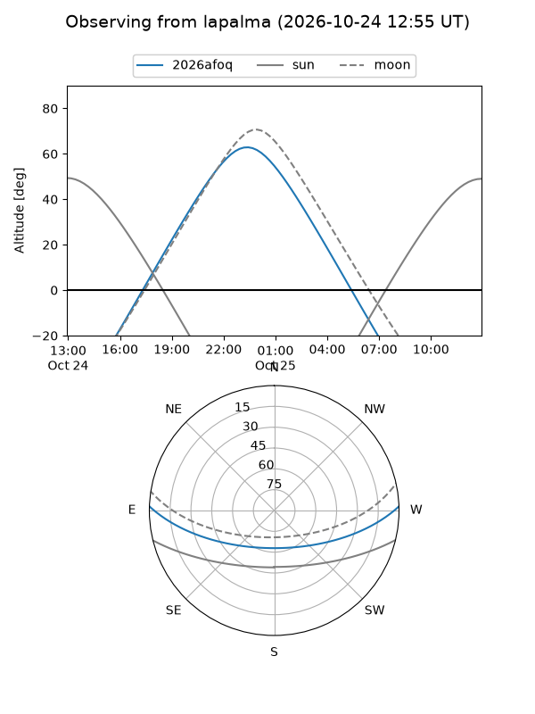
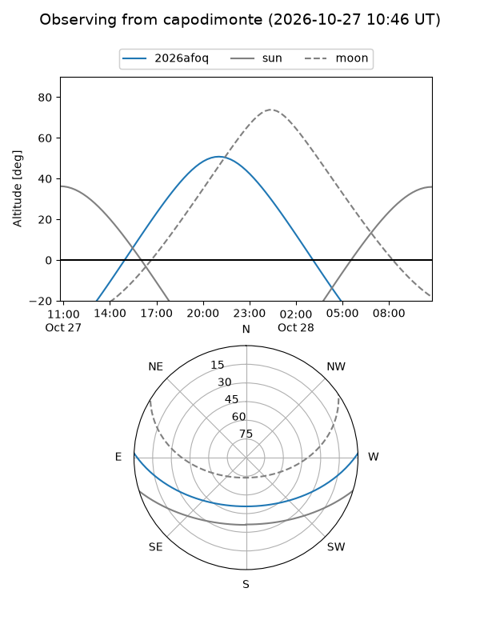
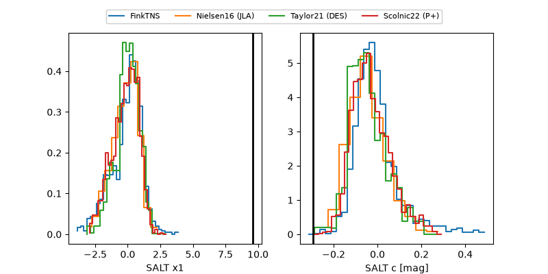

2026afoq
Target 2026afoq at 2026-10-27 11:02
Aliases and brokers:
FINK-ZTF: ztf.fink-portal.org/ZTF26acbidix
Lasair-ZTF: lasair-ztf.lsst.ac.uk/objects/ZTF26acbidix
ALeRCE-ZTF: alerce.online/object/ZTF26acbidix
YSE-PZ: ziggy.ucolick.org/yse/transient_detail/2026afoq
TNS name: wis-tns.org/object/2026afoq
Direct TNS query: direct search
alt names
ZTF26acbidix (ztf,fink_ztf)
2026afoq (tns,yse)
Coordinates:
equatorial (ra, dec) = 5.4699,+1.50135
equatorial (HMS+DMS) = 00:21:52.78,+01:30:04.85
galactic (l, b) = (107.7973,-60.49892)
Flags:
likely cv: !!
CV pen: 0.0001
peak dt: +41.2
Photometry:
last atlaso=17.91, ztfg=19.03, ztfr=18.96
2 atlaso, 6 ztfg, 4 ztfr detections
Lightcurve

Visibility



Additional plots
